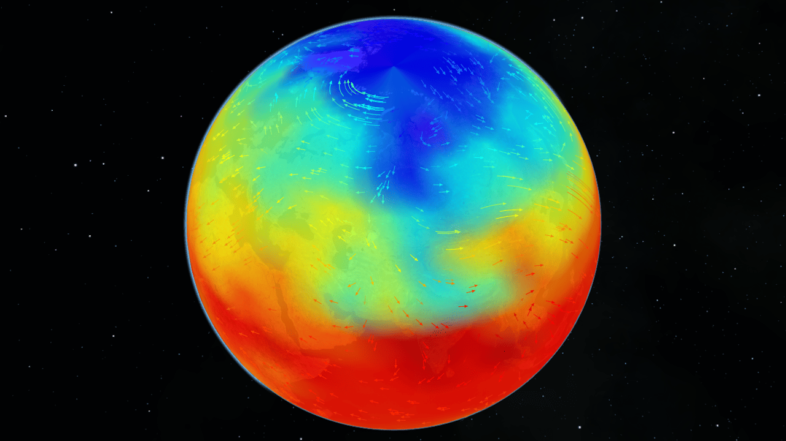
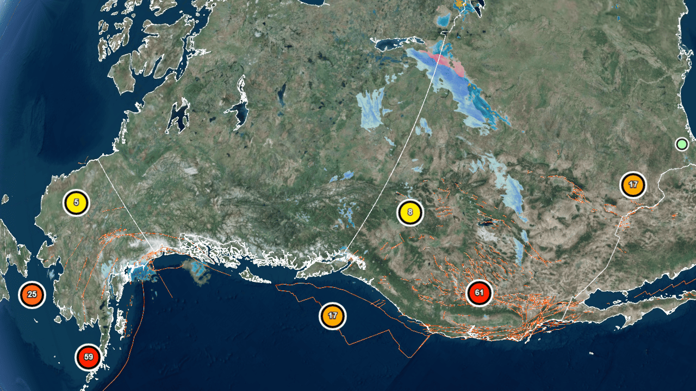
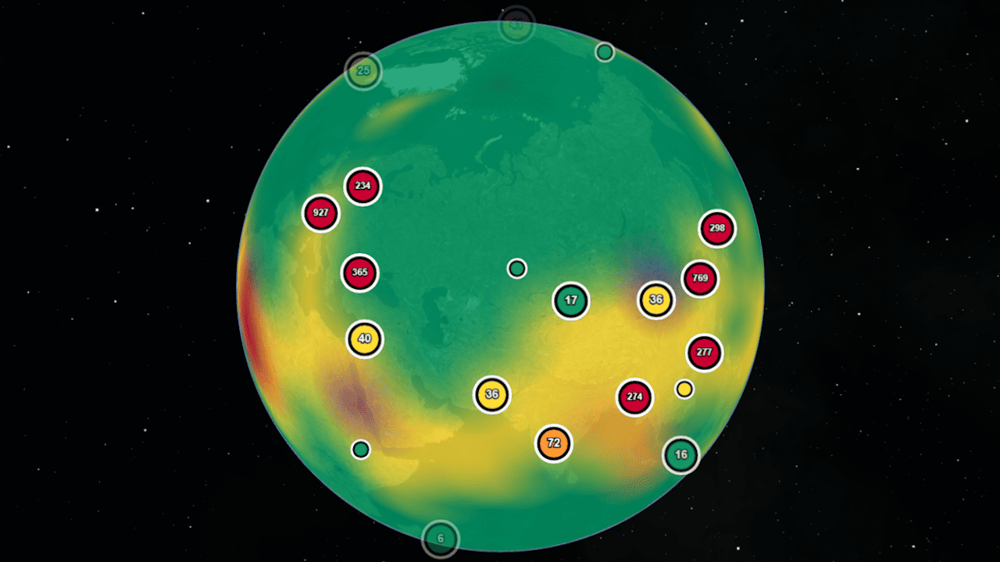
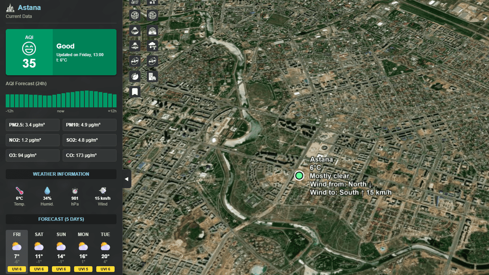
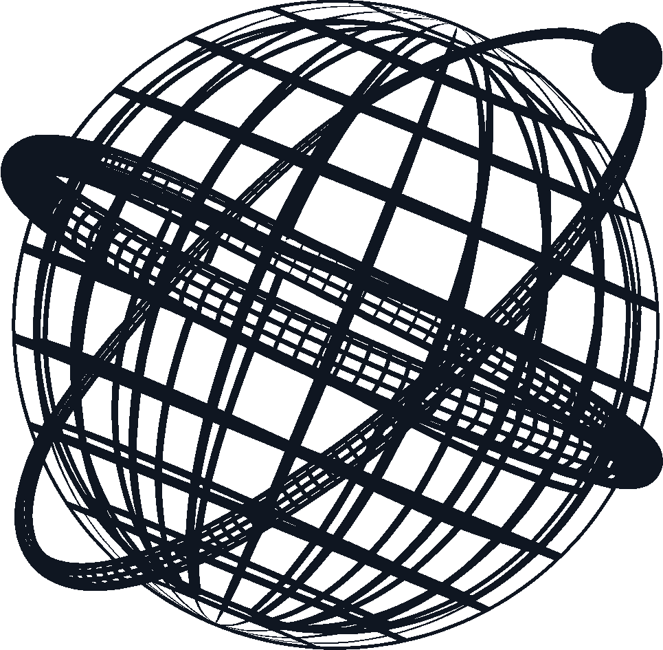

AilurusGIS — это передовая платформа для визуализации, анализа и управления 3D-данными о Земле. Раскройте потенциал ваших геоданных прямо в браузере.
Начать работуПродвинутая архитектура позволяет обрабатывать и отображать огромные массивы геоданных с максимальной плавностью.
Узнать большеВизуализируйте и анализируйте ваши данные на самом точном в мире движке рендеринга виртуального глобуса.
Узнать большеПоддержка погодных радаров, индексов качества воздуха (AQI), спутников в реальном времени и многого другого.
Узнать больше
Наблюдайте за глобальной циркуляцией атмосферы. Тепловая карта и потоки ветра в реальном времени позволяют анализировать погодные условия на всей планеты.

Интеграция данных Геологической службы США (USGS) и базы тектонических разломов. Изучайте эпицентры землетрясений с привязкой к границам литосферных плит.

Детальная визуализация Индекса качества воздуха (AQI). Тысячи наземных станций и глобальная интерполяция данных помогают оценивать экологическую обстановку.

Интерактивная панель с прогнозом погоды на 5 дней, почасовым графиком качества воздуха и подробными показателями загрязнения для любого выбранного города.
